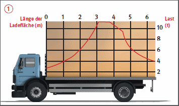
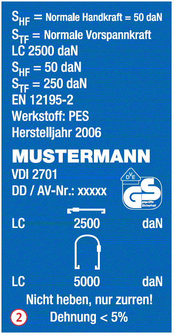
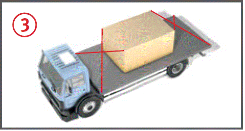
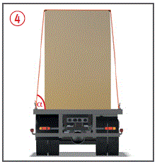
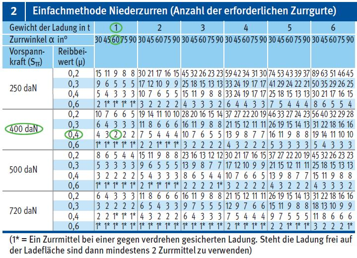
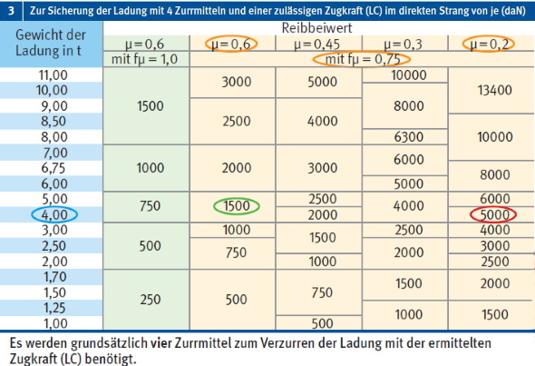

.
.
Ladungssicherung |

. oder Niederzurren
oder Niederzurren  .
. ..
.. .
.Beispiel Kennzeichnung

| SHF = | Handkraft |
| STF = | Vorspannkraft der Ratsche "Wert für das Niederzurren" |
| LC = | Zulässige Zugkraft im geraden Zug "Wert für das Diagonalzurren" |


| 1 | Reibbeiwerte (µ) nach DIN EN 12195-1:2010 (Auszug) |
| Materialpaarung an der Berührungsfläche (trocken oder nass und besenrein) | Reibbeiwert µ |
| Schnittholz | |
| Schnittholz – Schichtholz/Sperrholz (z. B. Siebdruckladeboden) | 0,45 |
| Schnittholz – geriffeltes Aluminium | 0,4 |
| Schnittholz – Stahlblech (z. B. Gerüststellrahmen auf Kanthölzer) | 0,3 |
| Kunststoff | |
| Kunststoffpalette – Schichtholz/Sperrholz (z. B. Siebdruckladeboden) | 0,2 |
| Kunststoff – geriffeltes Aluminium | 0,15 |
| Stahl und Metall | |
| Stahl – Schichtholz/Sperrholz (z. B. Metallbox auf Siebdruckladeboden) | 0,45 |
| Stahl – geriffeltes Aluminium | 0,3 |
| Stahl – Stahl (z. B. Ketten eines Raupenbaggers auf dem Tiefladerrahmen) | 0,2 |
| Beton | |
| Rauer Beton – Schnittholz (z. B. Betonrohre auf Kanthölzer) | 0,7 |
| Glatter Beton – Schnittholz (z. B. Filigranplatten auf Kanthölzer) | 0,55 |
| Rutschhemmende Matte | |
| Gummi | 0,6 |
| Anderer Werkstoff (z. B. Filz, Pappe, Flies, ...) | Nachw. v. Herst. |
Wenn die Berührungsflächen nicht besenrein und frei von Eis, Schnee und Frost (Temperaturen unter 0°) sind, ist nur ein Reibbeiwert von µ = 0,2 zu verwenden.
Zurrpunktschild nach DIN EN 12640
(Mindestgröße 200/150 mm)


Beispiel: Niederzurren
Ladung Palette Steine Gewicht = 1,0 t
(Ladeeinheit mit Palette)
Reibbeiwert µ = 0,45
(Schnittholz/Schichtholz)
Winkel (α) = 60°
Vorhandene Zurrmittel: STF 400 daN
(Normale Vorpannkraft)
Aus der Tabelle 2 die erforderliche Anzahl der Zurrmittel unter Berücksichtigung des Reibbeiwertes (µ), des Zurrwinkels (α) und der Vorspannkraft (STF) der Ratsche ablesen. Mindestens zwei Zurrmittel mit einer erreichbaren Vorspannkraft von 400 daN sind zum Sichern des Steinpaketes notwendig.

Beispiel: Diagonalzurren
Ladung Radlader, Gewicht = 4,0 t
Reibbeiwert µ = 0,6 mit fµ = 0,75
(Saubere gebremste Gummiräder/besenreine Ladefläche/kein Frost)
Reibbeiwert µ = 0,2
(verschmutzte Gummiräder/Ladefläche oder bei Eis, Schnee, Frost)
Winkelbereich für die Nutzung dieser Tabelle einhalten
20° ≤ α ≤ 65°, 6° ≤ β ≤ 55°
Bei µ = 0,6 sind 4 Zurrmittel und Zurrpunkte mit einer zulässigen Zugkraft (LC) von ≥ 1500 daN notwendig. Bei µ = 0,2 sind 4 Zurrmittel und Zurrpunkte mit einer zulässigen Zugkraft (LC) von 5000 daN notwendig.
07/2021